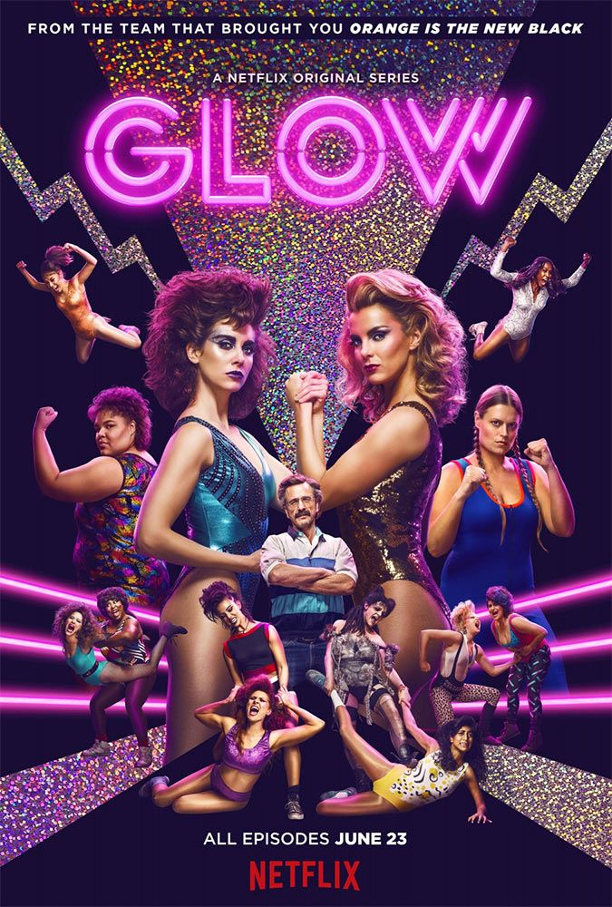
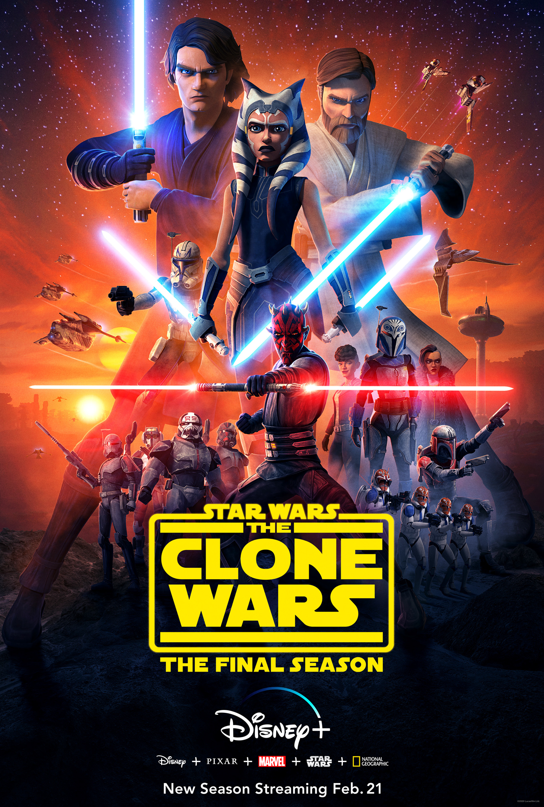
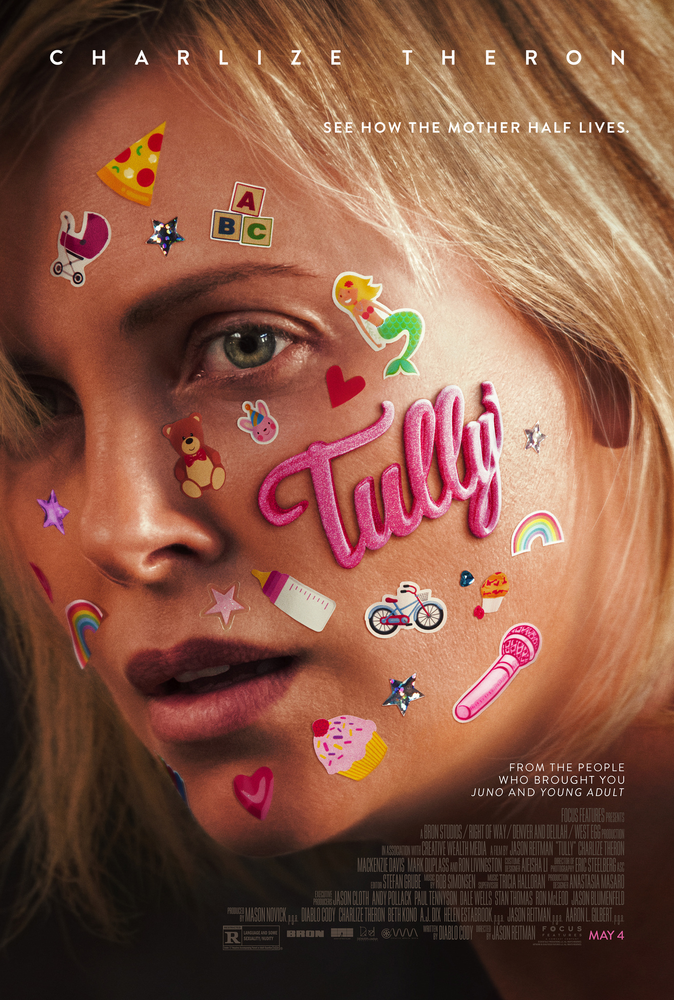

if you love music, movies and shows then you will love pop! culture.
We provide the best new media in all of seneca's many campuses!
good media is good media. you dont need the bleeding edge of technology but you do need a lot of bandwith.
Take a gander at our selection of top streaming shows! They're guaranteed to kill many hours of what should've been productive time.
The Netflix orignal series GLOW has one of the more original premises in recent TV history: It chronicles the life of a fledgling professional wrestling promotion called theGorgeous Ladies of Wrestling, as various aspiring actresses and generally women downon their luck audition and agree to take a stab at a wholly new field.
What sets Parks and Recreation apart from other comedies is that it’s absolutely sincereand free of cynicism. It’s clear that even if the characters rib each other, there’s genuine love between them. But yes, the show is hilarious, and Amy Poehler’s Leslie Knope isone of the seminal sitcom characters of our time.

The 80s-set mystery thriller is equal parts It, Stand by Me, and The Goonies as it mashesup the creepy atmosphere of a Stephen King novel with compelling characters and astrong narrative drive. The true test of Stranger Things is whether the show workswithout the nostalgia-inducing 80s setting, and the answer is yes.

Star Wars: The Clone Wars takes place during the title conflict, a time when AnakinSkywalker and his fellow Jedi Knights led the Grand Army of the Republic against theSeparatists’ New Droid Army. It’s notable for greatly expanding (and improving on)Anakin Skywalker’s backstory before he took on the persona of Darth Vader.
It's not even award season yet but let's rank the top movies of the year.
In the year 2045, people can escape their harsh reality in the OASIS, an immersive virtualworld where you can go anywhere, do anything, be anyone-the only limits are your ownimagination. OASIS creator James Halliday left his immense fortune and control of theOasis to the winner of a contest designed to find a worthy heir.

After surviving a near fatal bovine attack, a disfigured cafeteria chef (Wade Wilson)struggles to fulfill his dream of becoming Miami's hottest bartender, while also learningto cope with his lost sense of taste. Searching to regain his spice for life, as well as a fluxcapacitor, Wade must battle ninjas, the yakuza, and a pack of sexually aggressivecanines, as he journeys around the world to discover the importance of family, friendship,and flavor - finding a new taste for adventure and earning the coveted coffee mug title ofWorld's Best Lover.

Marlo, a mother of three including a newborn, is gifted a night nanny by her brother.Hesitant to the extravagance at first, Marlo comes to form a unique bond with thethoughtful, surprising, and sometimes challenging young nanny named Tully.
"Black Panther" follows T'Challa who, after the events of "Captain America: Civil War,"returns home to the isolated, technologically advanced African nation of Wakanda to takehis place as King. However, when an old enemy reappears on the radar, T'Challa's mettleas King and Black Panther is tested when he is drawn into a conflict that puts the entirefate of Wakanda and the world at risk.

Address Seneca@York Campus Toronto, ON
Find us online
https://www.popculture.com
© 2019. All titles and ranking have been stolen from Spotify, Rotten Tomatoes, And Netflix